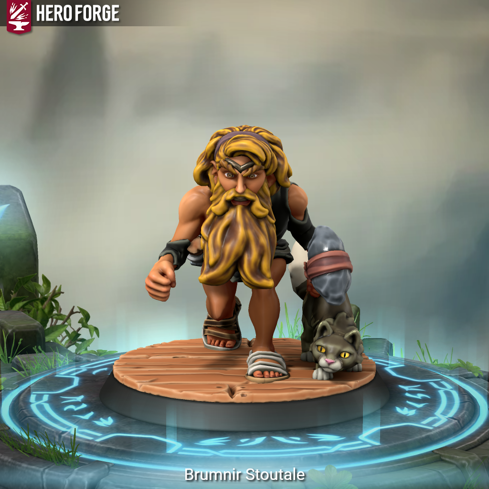

Brumnir Stoutale - Is This Anything?

Meet Brumnit Stoutale
They called him a runt the day he was born. Then they left him to the wolves… or as it happened, the cats.
Brumnir Stoutale is not what you picture when you hear “dwarf.” He stands three feet tall on a good day, weighs less than a small dog, and has not yet seen his twenty-first winter. By dwarven measure, he is barely more than an infant. By his own measure, he has already lived a full life, just not the one anyone intended for him.
Abandoned in the woods as a newborn, deemed unworthy by the very blood that bore him, Brumnir was found by a pack of wildcats and raised among them. It was Marak, a leopard of uncommon intelligence and uncommon patience, who became his true parent, teaching him to move through the jungle without sound, to read the language of wind and track and season, and to understand one truth above all others: the wild does not abandon its own. Only people do that.
For twenty years, Brumnir watched civilization spread like a wound. Villages became towns. Towns became cities. Cities became walls and cobblestones and the slow, indifferent erasure of everything that came before. The rivers ran grey. The old paths became roads. The territories he knew as home shrank year by year, until one morning there were no trees left to stand between him and the people who had taken them.
Most of the cats are gone now. Dead of sickness. Driven off. Marak remains.
The two of them – the smallest dwarf in any record worth keeping and a leopard who has forgotten more about survival than most scholars ever learn – spent their last months fighting back. Brumnir rode Marak hard along the treeline, a handaxe in one fist and a light hammer in the other, running off any who came too close. For a time, it worked. Fear is a useful thing when you know how to use it. But fear has limits, and eventually the humans came in numbers enough that even the sight of a wild-eyed dwarf on leopard-back wasn’t enough to turn them.
They ran him off too.
Now Brumnir and Marak roam. Not lost; drifters don’t get lost; but searching. For ground worth claiming. For a place that hasn’t yet been paved over. For anyone, perhaps, who understands that the world was not made for cities.
He doesn’t trust humanoids. He especially doesn’t trust humans. But he is here, and he is watching, and he has two weapons and a leopard and twenty years of wilderness behind him.
He’s been underestimated before. It didn’t end well for the ones who did it.